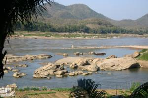

Le 25 janvier 2005,
Bon, aujourd’hui, j’ai envie de visiter un peu la ville, malgre mon handicap. J’en ai marre de tourner en rond dans ma chambre ! Michael va chercher un tuk-tuk qui nous emmene dans un des plus beaux temples de la ville. Il est magnifiquement decore et l’architecture toute en bois sculpte, typiquement laotienne, est superbe ! Le site est assez grand et je peine un peu pour me deplacer a bequilles surtout lorsque j’ai des marches a descendre, mais je suis tellement contente de pouvoir decouvrir un peu Luang Prabang et ses vestiges ! Je crois que je prefere les temples laotiens a ceux de Thailande ! Nous partons visiter un deuxieme temple ou Michael rencontre un moine bouddhique avec lequel il entame une discussion tres interessante sur le pourquoi de la mediation. En partant, le moine m’encourage a pratiquer la meditation afin de faire disparaitre toutes les pensees negatives qui me traversent l’esprit a cause de mon probleme de pied. Il me dit que ca m’aidera a guerir plus vite !
 Apres avoir mange un cheese burger laotien, je demande a un tuk-tuk de faire le tour de la ville afin de me rendre comtpe par moi-meme de la beaute de la ville. C’est en effet une tres charmante bourgade entouree par le Mekong et une belle riviere se jetant dans ce fleuve emblematique au bout de la ville. Luang Prabang compte 62 temples plus beaux les uns que les autres et se trouve etre classee au patrimoine mondial de l’humanite par l’Unesco. J’aurais vraiment bien aime pouvoir profiter un peu plus de cette incroyable cite et de son histoire si riche ! Malheureusement, nous partons des demain pour Bangkok via Vientiane afin de faire soigner mon pied et de nous reposer sur une plage de Thailande en attendant de pouvoir remarcher. Il faudra absolument que je revienne au Laos un jour, je suis frustree de partir ainsi en n’ayant vu qu’une partie de l’incroyable richesse de ce pays, autamt du point de vue de sa nature sauvage que de ses magnifiques temples !
Je finis cette journee completement extenuee d’avoir fourni autant d’efforts et je souhaite me reposer devant internet. Sans doure un peu trop fatiguee, je loupe la marche du cyber-cafe et tombe sur les genoux. J’ai eu un peu peur, mais je ne me suis pas fait trop mal au pied, tout va bien... Je crois qu’il ne faut pas que j’abuse ! Au cyber-cafe, nous tombons sur Alex et Laeticia, les 2 tourdumondistes Francais que nous avions rencontres a Soppong en Thailande. Ca nous fait plaisir de les revoir, nous les avions trouve vraiment sympas ! Nous dinons tous ensemble le soir dans une excellente pizzeria... Nous nous racontons nos vies, c’est un vrai plaisir de pouvoir echanger en francais ! Ils ont deja eu le temps de visiter un peu le Laos et ils adorent ce pays ! Ils me font d’autant plus regretter de le quitter aussi vite...
Eve-Laure
Salut Eve-Laure, Pour ta cheville, il faut que tu fasses attention de ne pas l’abimer plus et que tu lui laisses le temps de se remettre : il est conseillé 10 jours sans poser le pied par terre, meme si tu es strappée. Ensuite tu peux reprendre normalement tes activités, si tu as encore quelques douleurs, tu peux la strapper de nouveau pour un effort particulier (genre grande rando). Patience et courage, tu auras au moins musclé tes bras avec les béquilles.
Betty
Bonjour ma petite Eve-Laure,
J’espere que ça va mieux, bon rétablissement, bon courage.
Et tiens nous au courant. Prenez soin de vous.
Bises.
{kind=link}
{kind=link}